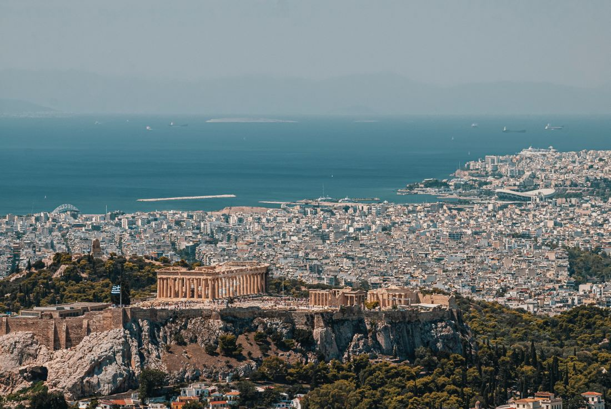
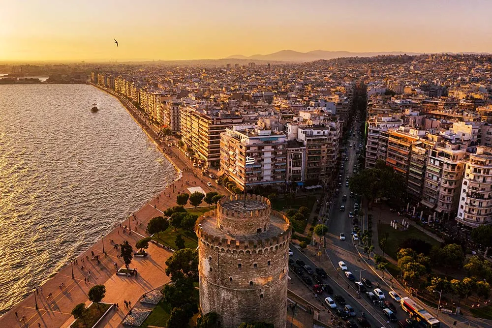
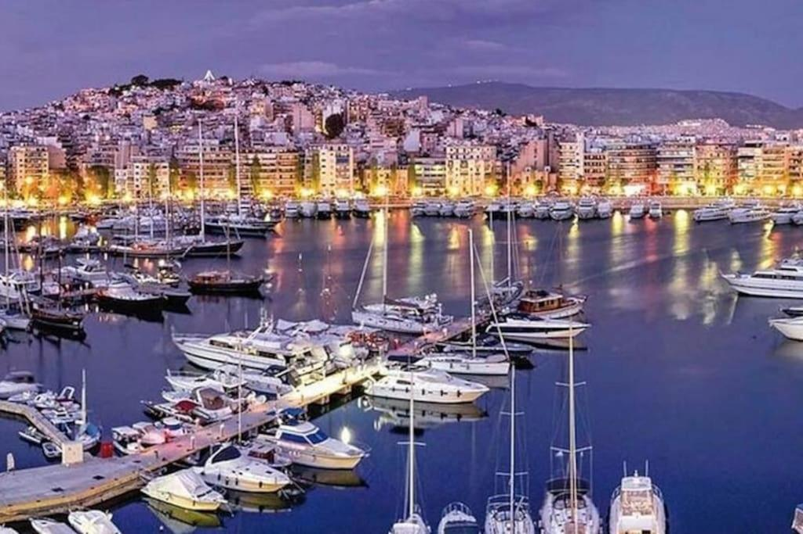
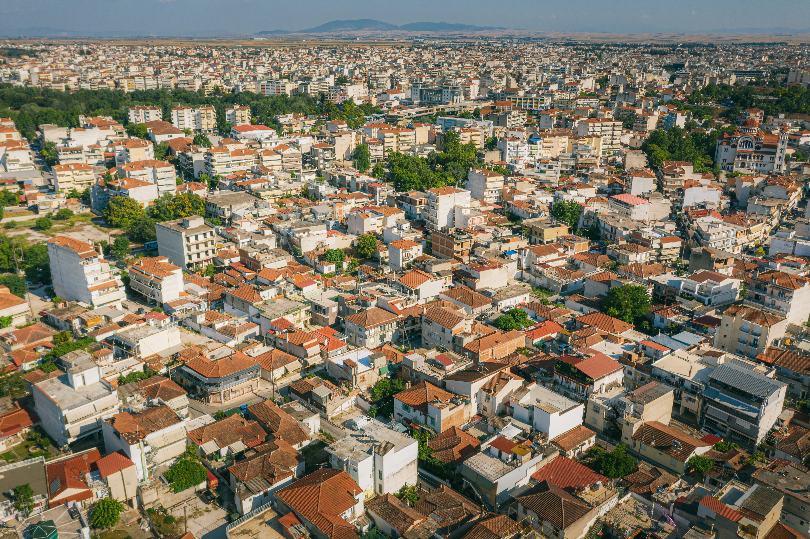
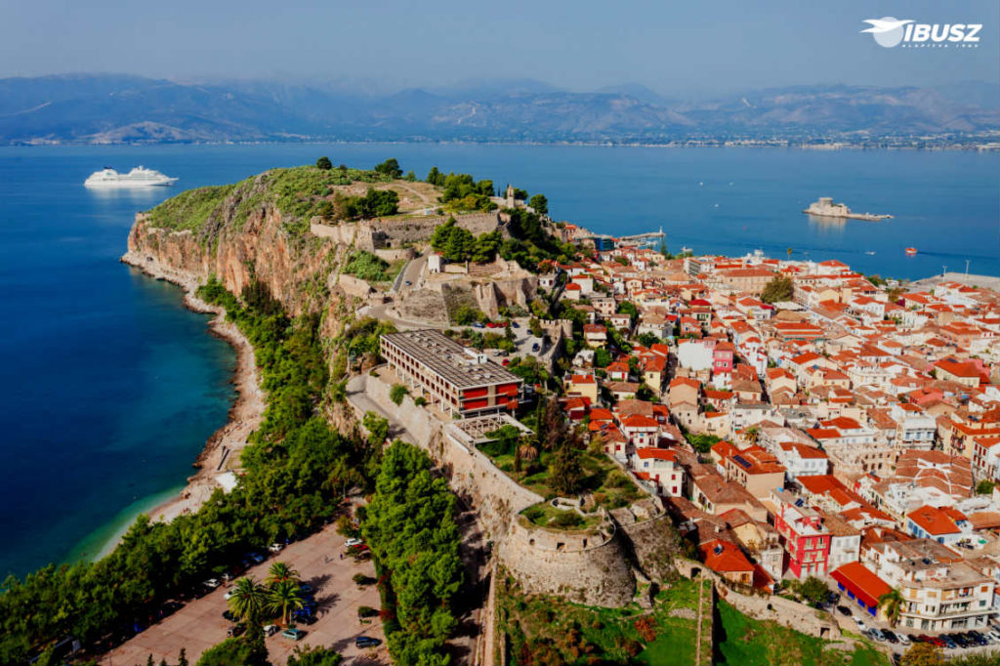

Athén
Athén Görögország fővárosa. Athén hatalmas, kozmopolita jellegű város. Lakossága körülbelül 600.000 fő.

Szaloniki
Görögország második legnagyobb városa és legforgalmasabb kikötője, Közép-Makedónia régió székhelye. Lakossága körülbelül 300.000 fő.
Pátra
Görögország harmadik legnagyobb városa és a nyugat-görögországi Ahaia prefektúra székhelye. Lakossága körülbelül 174.000 fő.

Pireusz
Pireusz kikötőváros az Attikai-félsziget szélén, Athéntól nem messze nyugat-délnyugatra található. Már az ókori Athénnak is itt volt a kikötője, és a város 1834-es újraalapításakor is ezt a kikötőt szemelték ki. Ma a Földközi-tenger egyik legforgalmasabb kikötője.
Lárisza
Lárisza város Görögország középső részén, Thesszália régiójának a központja Lárisza prefektúrában, az Égei-tenger partjának közelében található. Lakossága körülbelül 150.000 fő.
Korinthosz
Korinthosz város Görögországban, a Peloponnészoszi-félszigetet a kontinentális Görögországgal összekötő földhídon (Iszthmosz), Athéntól 78 kilométerre fekszik.
